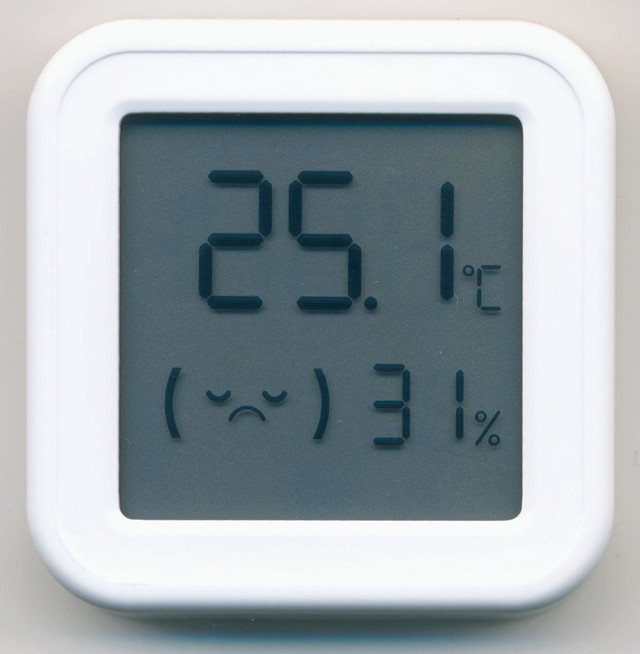
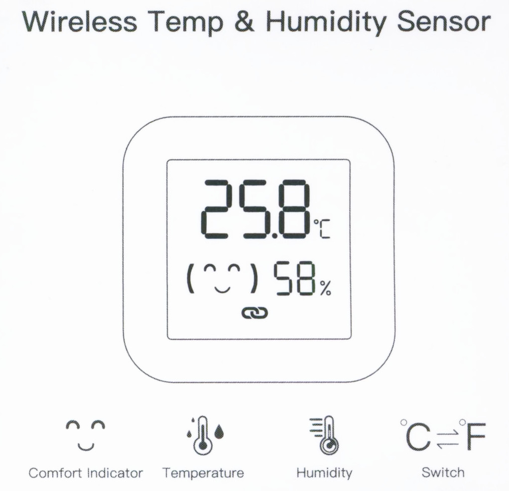
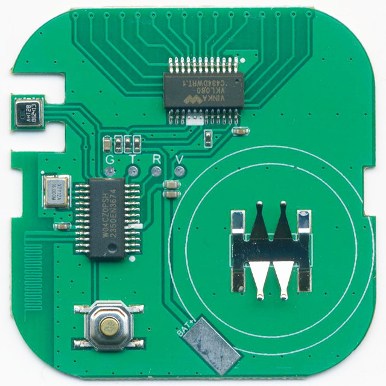
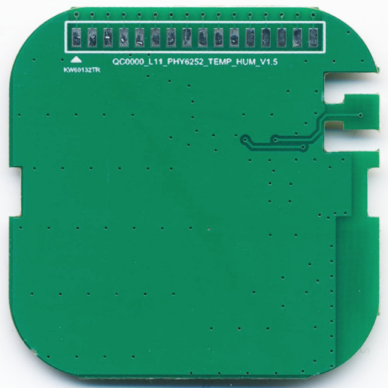
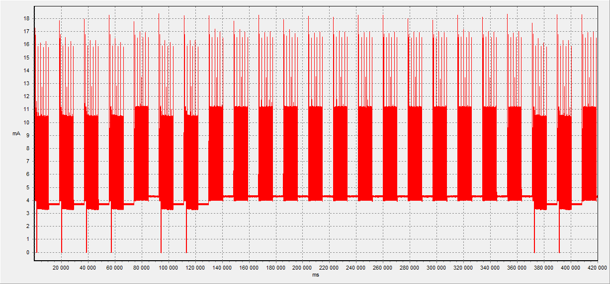

Wireless Temperature & Humidity Sensor, PCB Mark: QC0000_L11_PHY6252_TEMP_HUM_V1.5
Custom firmware for working in BTHome format
SoC:
PHY6252, Q: 16MHz, Diver LCD: VKL060, Sensor: AHT20
Manufacturer: ?
Full Flash:
Tuya version


Power Original FW.
Startup (overage 4.05 mA):
